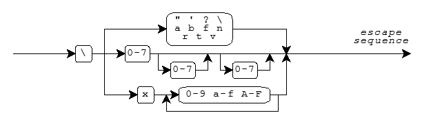

Character Sets · Character Sets and Locales · Escape Sequences · Numeric Escape Sequences · Trigraphs · Multibyte Characters · Wide-Character Encoding
Characters play a central role in Standard C. You represent a C program as one or more source files. The translator reads a source file as a text stream consisting of characters that you can read when you display the stream on a terminal screen or produce hard copy with a printer. You often manipulate text when a C program executes. The program might produce a text stream that people can read, or it might read a text stream entered by someone typing at a keyboard or from a file modified using a text editor. This document describes the characters that you use to write C source files and that you manipulate as streams when executing C programs.
When you write a program, you express C source files as text lines containing characters from the source character set. When a program executes in the target environment, it uses characters from the target character set. These character sets are related, but need not have the same encoding or all the same members.
Every character set contains a distinct code value for each character in the basic C character set. A character set can also contain additional characters with other code values. For example:
'x' becomes the value of
the code for the character corresponding to x in the target character set."xyz" becomes a sequence of
character constants stored in successive bytes of memory, followed by a byte containing the value
zero:{'x', 'y', 'z', '\0'}A string literal is one way to specify a null-terminated string, an array of zero or more bytes followed by a byte containing the value zero.
Visible graphic characters in the basic C character set:
Form Members
letter A B C D E F G H I J K L M
N O P Q R S T U V W X Y Z
a b c d e f g h i j k l m
n o p q r s t u v w x y z
digit 0 1 2 3 4 5 6 7 8 9
underscore _
punctuation ! " # % & ' ( ) * + , - . / :
; < = > ? [ \ ] ^ { | } ~
Additional graphic characters in the basic C character set:
Character Meaning space leave blank space BEL signal an alert (BELl) BS go back one position (BackSpace) FF go to top of page (Form Feed) NL go to start of next line (NewLine) CR go to start of this line (Carriage Return) HT go to next Horizontal Tab stop VT go to next Vertical Tab stop
The code value zero is reserved for the null character which is
always in the target character set. Code values for the basic C character set are positive when stored in
an object of type char. Code values for the digits are contiguous, with increasing value. For
example, '0' + 5 equals '5'. Code values for any two letters are not
necessarily contiguous.
An implementation can support multiple locales, each with a different
character set. A locale summarizes conventions particular to a given culture, such as how to format dates
or how to sort names. To change locales and, therefore, target character sets while the program is running,
use the function setlocale. The translator encodes
character constants and string literals for the "C"
locale, which is the locale in effect at program startup.
Within character constants and string literals, you can write a variety of escape sequences. Each escape sequence determines the code value for a single character. You use escape sequences to represent character codes:
\n)\t)\a)\0)An escape sequence takes the form shown in the diagram.

Mnemonic escape sequences help you remember the characters they represent:
Character Escape Sequence " \" ' \' ? \? \ \\ BEL \a BS \b FF \f NL \n CR \r HT \t VT \v
You can also write numeric escape sequences using either octal or hexadecimal digits. An octal escape sequence takes one of the forms:
\d or \dd or \ddd
The escape sequence yields a code value that is the numeric value of the 1-, 2-, or 3-digit octal number
following the backslash (\). Each d can be any digit in the range
0-7.
A hexadecimal escape sequence takes one of the forms:
\xh or \xhh or ...
The escape sequence yields a code value that is the numeric value of the arbitrary-length hexadecimal
number following the backslash (\). Each h can be any decimal digit
0-9, or any of the letters a-f or A-F. The letters represent the
digit values 10-15, where either a or A has the value 10.
A numeric escape sequence terminates with the first character that does not fit the digit pattern. Here are some examples:
'\0'.NL) within a string literal by writing:"hi\n" which becomes the array
{'h', 'i', '\n', 0}"\3abc" which becomes the array
{3, 'a', 'b', 'c', 0}\xF
followed by the digit 3 by writing two string literals:"\xF" "3" which becomes the array
{0xF, '3', 0}A trigraph is a sequence of three characters that begins with two question marks
(??). You use trigraphs to write C source files with a character set that does not contain
convenient graphic representations for some punctuation characters. (The resultant C source file is not
necessarily more readable, but it is unambiguous.)
The list of all defined trigraphs is:
Character Trigraph
[ ??(
\ ??/
] ??)
^ ??'
{ ??<
| ??!
} ??>
~ ??-
# ??=
These are the only trigraphs. The translator does not alter any other sequence that begins with two question marks.
For example, the expression statements:
printf("Case ??=3 is done??/n");
printf("You said what????/n");
are equivalent to:
printf("Case #3 is done\n");
printf("You said what??\n");
The translator replaces each trigraph with its equivalent single character representation in an early phase of translation. You can always treat a trigraph as a single source character.
A source character set or target character set can also contain multibyte characters (sequences of one or more bytes). Each sequence represents a single character in the extended character set. You use multibyte characters to represent large sets of characters, such as Kanji. A multibyte character can be a one-byte sequence that is a character from the basic C character set, an additional one-byte sequence that is implementation defined, or an additional sequence of two or more bytes that is implementation defined.
Any multibyte encoding that contains sequences of two or more bytes depends, for its interpretation between bytes, on a conversion state determined by bytes earlier in the sequence of characters. In the initial conversion state if the byte immediately following matches one of the characters in the basic C character set, the byte must represent that character.
For example, the EUC encoding is a superset of ASCII. A byte value in the interval [0xA1, 0xFE] is the first of a two-byte sequence (whose second byte value is in the interval [0x80, 0xFF]). All other byte values are one-byte sequences. Since all members of the basic C character set have byte values in the range [0x00, 0x7F] in ASCII, EUC meets the requirements for a multibyte encoding in Standard C. Such a sequence is not in the initial conversion state immediately after a byte value in the interval [0xA1, 0xFe]. It is ill-formed if a second byte value is not in the interval [0x80, 0xFF].
Multibyte characters can also have a state-dependent encoding. How you interpret a byte in such an encoding depends on a conversion state that involves both a parse state, as before, and a shift state, determined by bytes earlier in the sequence of characters. The initial shift state, at the beginning of a new multibyte character, is also the initial conversion state. A subsequent shift sequence can determine an alternate shift state, after which all byte sequences (including one-byte sequences) can have a different interpretation. A byte containing the value zero, however, always represents the null character. It cannot occur as any of the bytes of another multibyte character.
For example, the JIS encoding is another superset of ASCII. In the initial shift state, each byte represents a single character, except for two three-byte shift sequences:
"\x1B$B" shifts to two-byte mode. Subsequently, two successive
bytes (both with values in the range [0x21, 0x7E]) constitute a single multibyte character."\x1B(B" shifts back to the initial shift state.JIS also meets the requirements for a multibyte encoding in Standard C. Such a sequence is not in the initial conversion state when partway through a three-byte shift sequence or when in two-byte mode.
(Amendment 1 adds the type mbstate_t, which describes an object that can store a conversion
state. It also relaxes the above rules for generalized multibyte characters, which describe
the encoding rules for a broad range of wide streams.)
You can write multibyte characters in C source text as part of a comment, a character constant, a string
literal, or a filename in an include directive. How
such characters print is implementation defined. Each sequence of multibyte characters that you write must
begin and end in the initial shift state. The program can also include multibyte characters in null-terminated C strings used by
several library functions, including the format strings for
printf and scanf.
Each such character string must begin and end in the initial shift state.
Each character in the extended character set also has an integer representation, called a
wide-character encoding. Each extended character has a unique wide-character value. The value zero
always corresponds to the null wide character. The type definition
wchar_t specifies the integer type that represents wide
characters.
You write a wide-character constant as L'mbc',
where mbc represents a single multibyte character. You write a wide-character string literal as L"mbs", where
mbs represents a sequence of zero or more multibyte characters. The wide-character string
literal L"xyz" becomes a sequence of wide-character constants stored in successive bytes of
memory, followed by a null wide character:
{L'x', L'y', L'z', L'\0'}
The following library functions help you convert between the multibyte and wide-character
representations of extended characters: btowc, mblen, mbrlen, mbrtowc, mbsrtowcs,
mbstowcs, mbtowc, wcrtomb,
wcsrtombs, wcstombs, wctob, and
wctomb.
The macro MB_LEN_MAX specifies the length of the
longest possible multibyte sequence required to represent a single character defined by the implementation
across supported locales. And the macro MB_CUR_MAX
specifies the length of the longest possible multibyte sequence required to represent a single character
defined for the current locale.
For example, the string literal "hello" becomes an array of
six char:
{'h', 'e', 'l', 'l', 'o', 0}
while the wide-character string literal L"hello" becomes an array of six integers of type
wchar_t:
{L'h', L'e', L'l', L'l', L'o', 0}
See also the Table of Contents and the Index.
Copyright © 1992-2010 by P.J. Plauger and Jim Brodie. All rights reserved.